Private Chef in
Highgate
London Residential
Bespoke fine dining cooked in your own home in Highgate: seasonal ingredients, fine-dining technique and a full team.
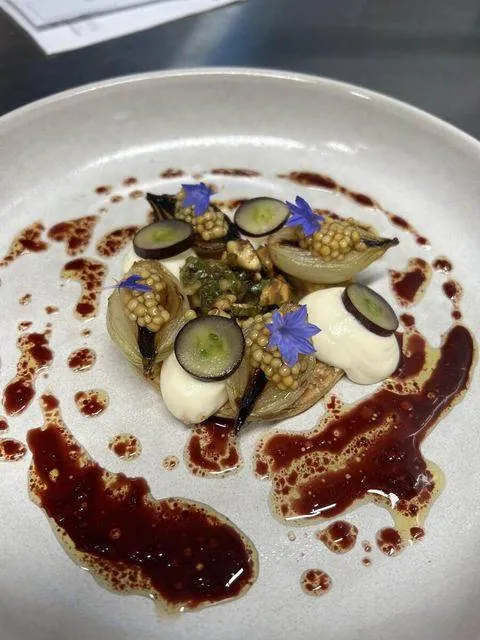
Private dining, cooked exactly where you are
Highgate's village feel, historic streets and views over London make it a gentle place to entertain. Alejandro cooks here for families who enjoy relaxed gatherings and quietly good food.
What to expect in Highgate
01Period homes and village streets
Highgate's Georgian and Victorian houses often have lovely gardens and older kitchens. We confirm the layout in advance and plan menus around the equipment available.
02Waterlow Park, the Heath and summer
With Waterlow Park, Hampstead Heath and the Ponds nearby, summer is a natural season for garden dinners and long lunches.
03Dinner parties and family meals
Typical bookings include dinner parties for six to twelve, family Sunday lunches and birthday celebrations. Children's menus and allergy-friendly dishes are planned from the start.
04Special occasions
Engagement dinners, anniversaries and small weddings at home are regular bookings, with bar service and canapés available.
05Planning around older kitchens
Highgate's period homes often have kitchens that were designed for a different era: small ovens, limited counter space and long walks to the dining room. We solve that by prepping elsewhere, using portable equipment and plating in stages so hot dishes arrive hot. A short call or photos of the kitchen are usually enough to plan this properly.
06A sample menu for Highgate
A menu for a relaxed dinner: smoked mackerel pâté, a roast guinea fowl with chestnuts and sage, a warm winter salad and a rhubarb crumble with custard.
07Cooking in Highgate's period homes
Highgate's Georgian and Victorian houses have character but not always the layout of a modern kitchen. Many have a separate dining room at some distance, steps between rooms or older ovens. We plan dishes with that in mind, choosing courses that hold well and plating at the pass so every dish reaches the table at the right temperature.
Alejandro’s experience in Highgate
Highgate's village streets suit a quieter style of entertaining. Alejandro brings dishes that are quietly good, without showy plating, and a pace that leaves hosts and guests free to enjoy a relaxed evening.
Family homes reward a chef who is organised and unobtrusive. Alejandro brings the precision of a three-star kitchen and the generosity of the Spanish table he grew up around, so the meal feels relaxed for the host and exact on the plate.
From enquiry to dinner in four steps
- 1
Send an enquiry
Date, guest count and ideas through the enquiry form.
- 2
Get a proposal
A tailored menu proposal within 24 hours.
- 3
Plan the menu
Cuisine, dietary needs and drinks agreed with you.
- 4
Enjoy the evening
Shopping, cooking, service and a clean kitchen.
Cuisines Alejandro cooks in Highgate
Recent dishes
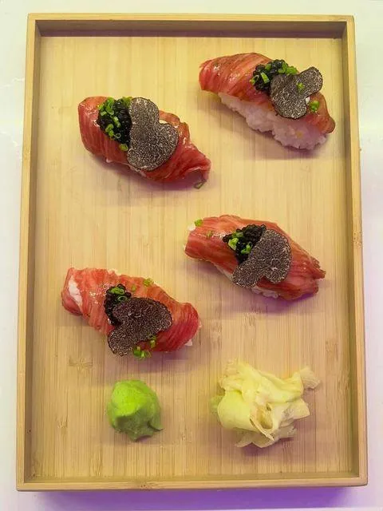


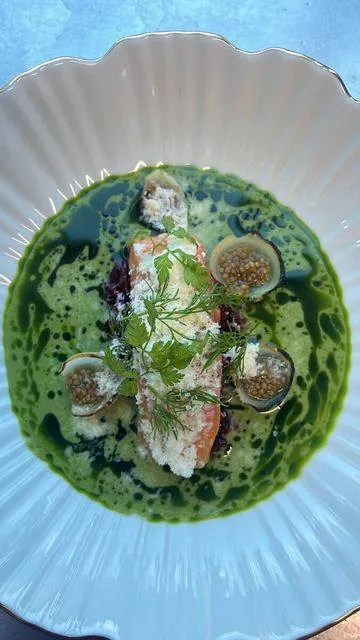
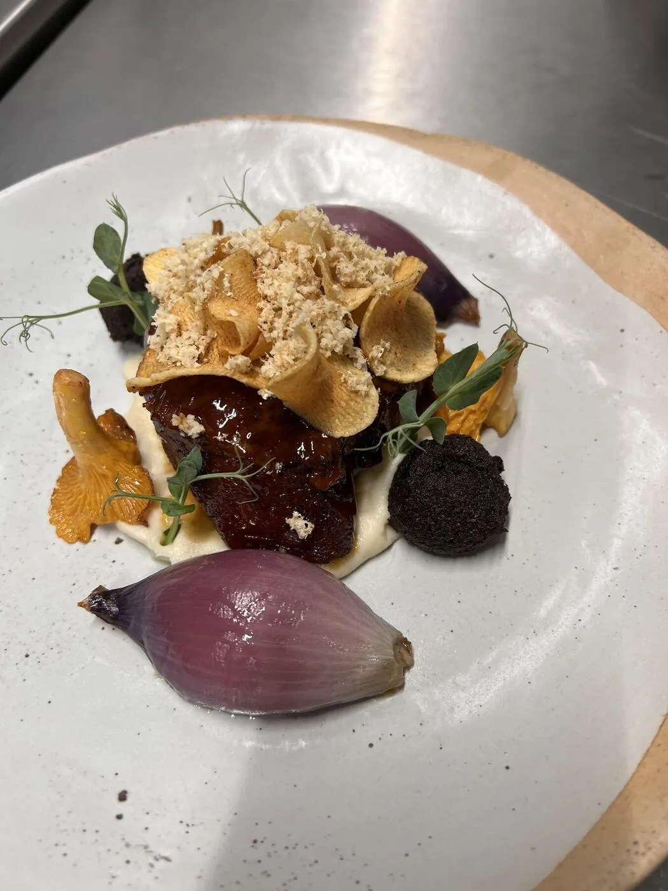
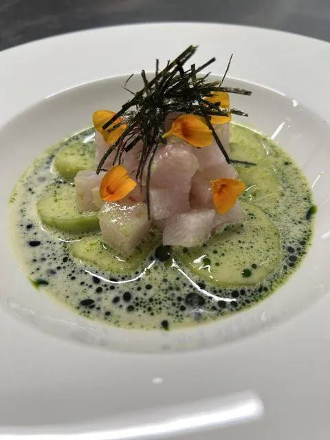

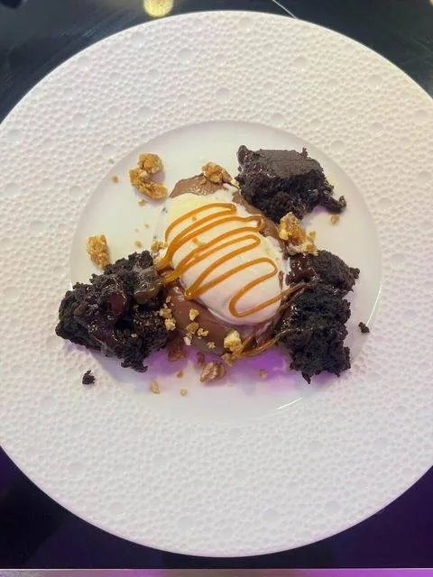
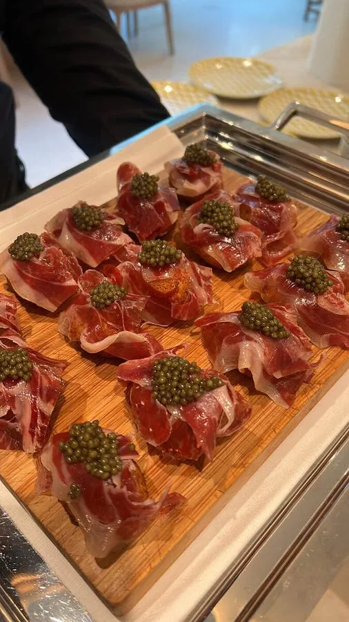
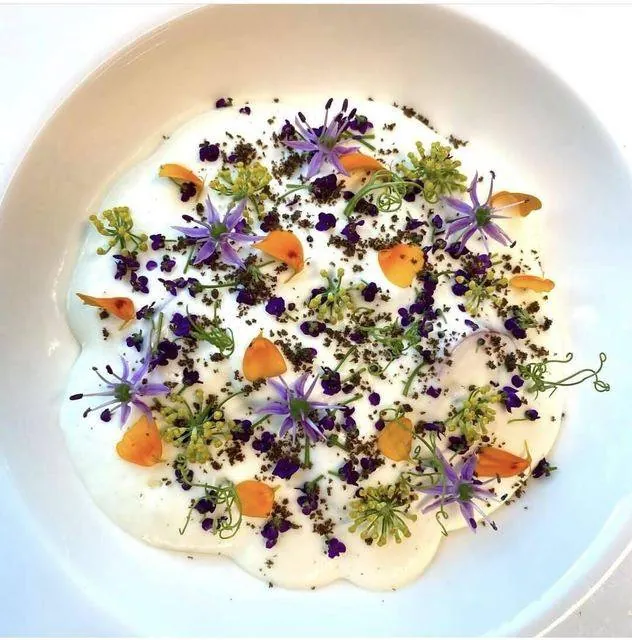
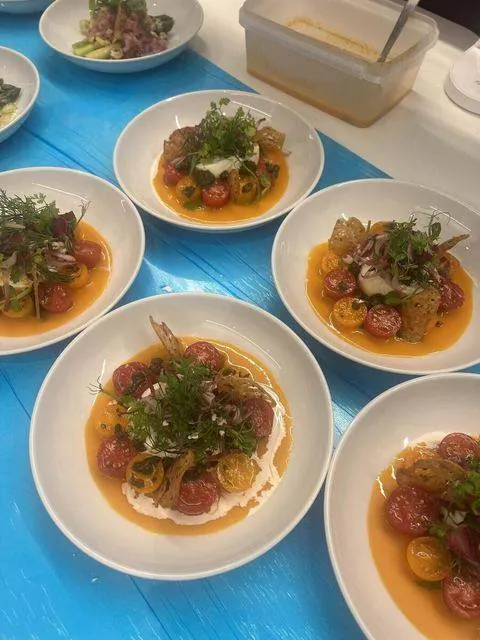
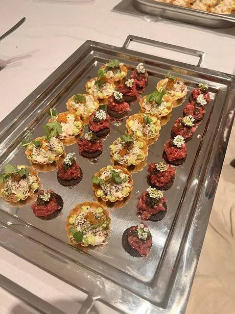
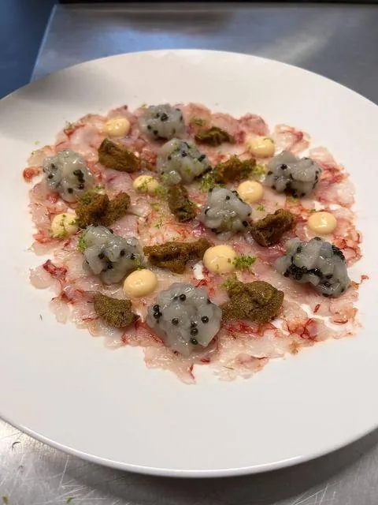

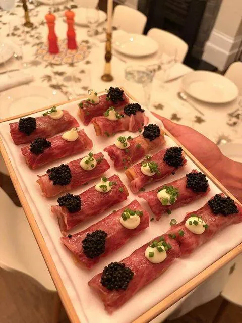
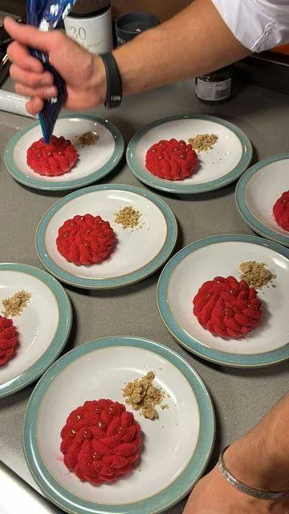
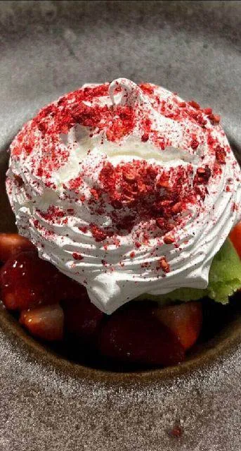
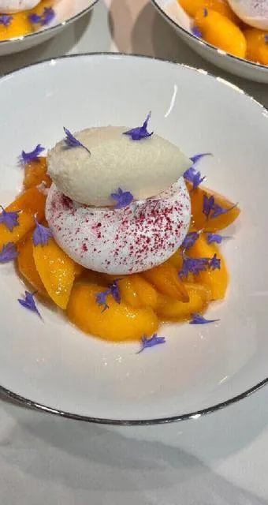
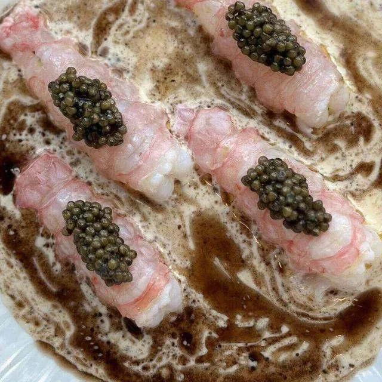
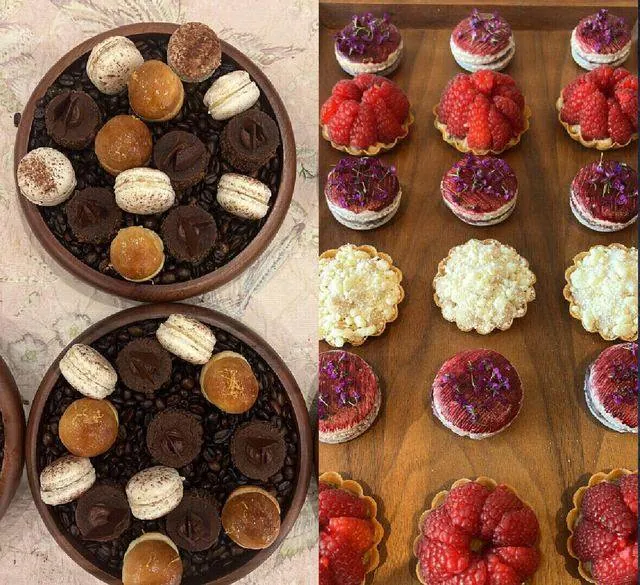

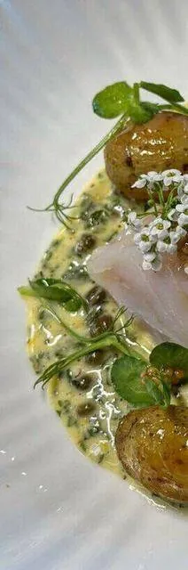
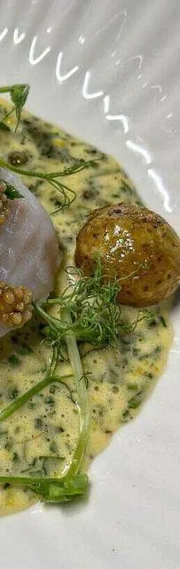
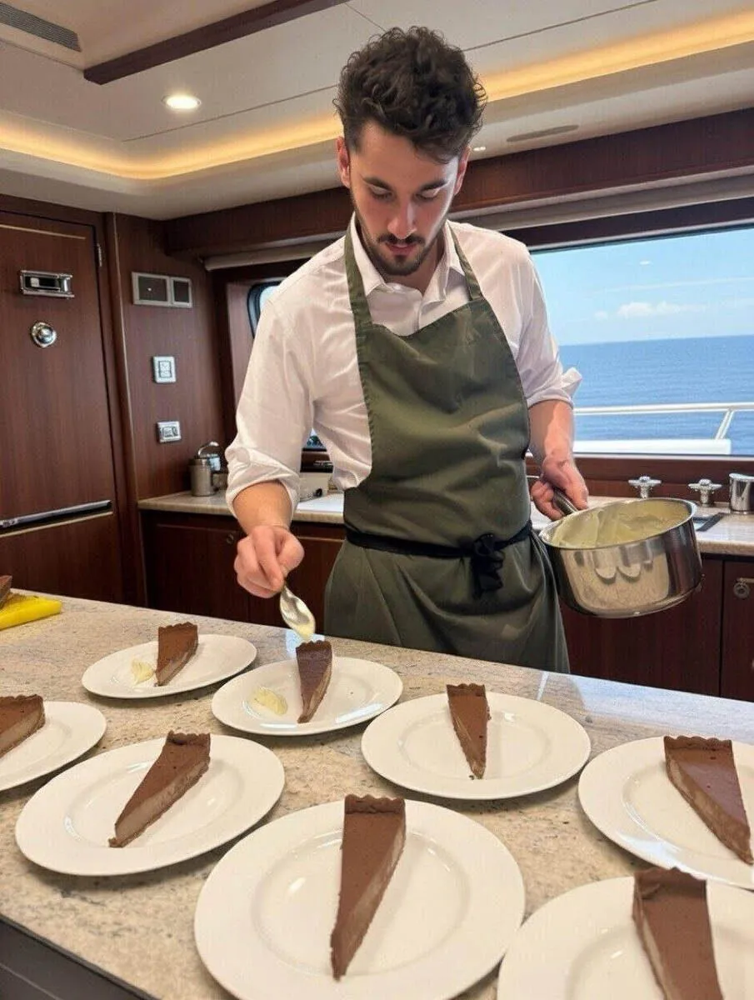
How Alejandro can cook in Highgate
Private Household
Resident or recurring chef service for family homes in Highgate.
02Private & Corporate Events
One-off dinners, celebrations and corporate receptions.
03Gala Dinners
High-end receptions for private clients and luxury brands.
04International Clients
Travel, team, menu and logistics fully arranged.
05Yachts & Superyachts
Onboard chef service for charters and moorings.
06Cocktail & Bar Service
Bespoke bar set-up and drinks menus for your event.
Private Chef in Highgate: FAQs
Can Alejandro cook in a Victorian kitchen in Highgate?
Yes. We plan menus around the layout and equipment, confirmed in advance.
Can you cater for allergies in Highgate?
Yes. Allergies and intolerances are confirmed at the start and handled carefully.
Can you bring your own equipment to a Highgate kitchen?
Yes. We can bring induction burners, warming equipment and serving ware where the kitchen needs it, and take it all away again afterwards.
Can you cook a winter menu in Highgate?
Yes. Winter menus with roasts, braises and warming desserts suit the season.
Can you cook a seated dinner in a Highgate house with a basement kitchen?
Yes. We plan the route from kitchen to dining room, use warmed plates and time courses so hot dishes stay hot.
What clients say
- ★★★★★
“Alejandro was fantastic and provided delicious, high quality and beautifully presented food to make my sister's bachelorette incredibly special! A direct quote: 'Chef Alejandro was a slay'. Would definitely book him again!”
Becky · 16 guests
- ★★★★★
“The most delicious Spanish food. Alejandro is an incredible chef, and made the hen do so special. I would recommend Alejandro to anyone, he is a superstar!”
Francesca · 13 guests
- ★★★★★
“Alejandro was great with planning ahead of the event, arrived on time, made the most delicious food, and was very clean and tidy. His menus are also amazing, and as good as they sound.”
Bea · 14 guests
- ★★★★★
“We booked Chef Alejandro for my mother's 65th birthday dinner. He helped us create a vegetarian Asian fusion menu, and every dish was delicious with very generous portions. My mum was absolutely delighted.”
Georgina · 6 guests
- ★★★★★
“I booked Alejandro for my 40th birthday and it was perfect. I had gluten free and vegetarian guests which he catered to, with two beautifully cooked options per course. I'd also add his canapés for an extra special touch!”
Kat · 5 guests
- ★★★★★
“Alejandro catered for our intimate wedding, we consider ourselves 'foodies' and the food was a really important part of it and Alejandro absolutely delivered, from the canapés to dessert everything was amazing and I could not have asked for a better service or meal experience. Every single person emphasised how incredible the food was.”
Sophie · Wedding, 12 guests
- ★★★★★
“I can honestly say that this was the best BBQ ever hosted in our house. Alejandro and his team delivered beautifully cooked food and impeccable service. I had people coming over to me all afternoon and early night to say that they felt well looked after but also that the food was incredible!”
Marcela · BBQ, 30 guests
- ★★★★★
“Chef Alejandro and the bartender, Mihai, superseded our expectations. The canapés we ordered were incredible from the presentation to the taste. He served them himself on trays and explained each one to our guests, which made it more personal. Our event was truly elevated by their catering services.”
Agnes · Private event, 32 guests
- ★★★★★
“I had never used a private chef for an event before, but our experience with Chef Alejandro was brilliant. He arrived at the agreed time with everything he needed. The food was spectacular and gained a lot of wonderful comments from the guests.”
Kirby · Private dinner, 21 guests
- ★★★★★
“The whole experience was faultless! From curating the menu with Alejandro to Álvaro coming and cooking a fantastic meal. The food was outstanding and great quality, and he left the house so tidy. Highly recommend!”
Jessica · Private dinner, 17 guests
- ★★★★★
“Alejandro was professional, the food was incredible, overall it made for an amazing evening! We tried some of the most amazing delicacies executed with such care, the mantao bread (to name one of many) was phenomenal.”
Emmie · 7 guests
- ★★★★★
“Perfect from start to finish. Alejandro provided an amazing menu initially and took my suggestions and requests onboard. He was engaging, supremely competent and made loads of excellent dishes. Everyone loved it.”
Daniel · 5 guests
- ★★★★★
“10/10! Food was amazing, top restaurant standard. Alejandro was very organised and helped our event run smoothly. Would certainly book him again.”
Lucy · 23 guests
- ★★★★★
“Excellent service from start to finish. We did nothing but sit at a beautifully laid table, eat delicious food and wave them goodbye after everything had been cleaned and cleared. They made our evening super special.”
Niki · 8 guests
Verified reviews from real bookings via Yhangry · Read all reviews
Highgate on the map
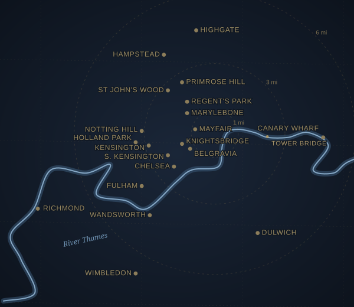